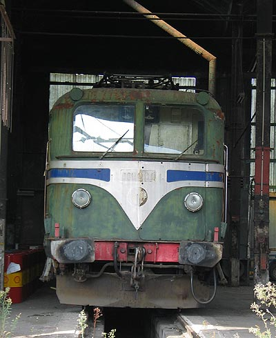

CC 20001
La grand-mère du monophasé français
Au début du XXe siècle, les essais de traction ferroviaire sous courant monophasé mettent en évidence les deux points suivants: l'unique technique réellement adaptée est alors le moteur direct et ces moteurs supportent mal les fréquences élevées de courant en raison de problèmes de commutation du collecteur.
Ce n'est pas un problème à une époque où les réseaux d'électricité industrielle ne sont pas étendus et que les opérateurs ferroviaires peuvent produire leur propre courant à 16 2/3 Hz. Cependant, à l'exception de la compagnie du Midi, l'intérêt des Français pour le monophasé n'arrivera que quelques décénies plus tard alors que des essais d'alimentation à 50 Hz sur la ligne allemande du Höllental donnent des résultats encourageants grâce aux progrès accomplis par l'électrotechnique. Après la victoire de 1945, la SNCF se lance dans la poursuite des essais allemands et, à la fin des années 40, dans l'expérimentation de ce courant en conditions réelles sur une ligne française : Aix-les-bains - La Roche sur Foron.
L'industrie suisse, forte de son savoir faire en monophasé construit la CC 6051 qui deviendra la CC 20001, premier des prototypes monophasés de Savoie. Elle est mise en service le 9 Septembre 1950. Non seulement elle innove sur le plan électrique mais, en plus, elle est mécaniquement en rupture avec les 2D2 d'avant guerre. Son chassis repose sur deux bogies à 3 essieux moteurs à l'instar des démonstrateurs Alsthom CC 7001 et 7002. Par la suite, la SNCF ne commandera plus que des machines électriques à adhérence totale. Cette machine n'est pas une simple locomotive monophasée. Elle peut rouler sous caténaire 1,5 kV continu. A puissance très réduite toutefois. Il s'agit d'une petite bicourant.
A l'issue des essais où elle est confrontée à la CC 20002 d'Alsthom et la BBB 20003 de MTE, la CC 20001 se montre plus robuste et emporte l'adhésion puisqu'elle donne naissance à la petite série des CC 25001 à 9 qui serviront sur l'étoile d'Annemasse. Cependant, le moteur direct ne fera qu'une brève apparition dans l'éventail des technologies de la SNCF. Hormis les BB 13000 qui ne laisseront pas un souvenir impérissable, la SNCF se penche, d'abord timidement, sur la machine monophasée à redresseurs de courant et moteurs continus.
Ainsi, les BB 25150 sont arrivées dès 1967 pour épauler puis remplacer les premières machines monophasées de la SNCF, après une petite vingtaine d'années de service. Les 10 machines avaient effectué leur carrière au dépôt d'Annemasse puis, à partir de 1972, à Chambéry. Elles assuraient un service mixte sur les lignes électrifiées en monophasé de l'étoile de Savoie (Aix les Bains - La Roche-sur-Foron - Annemasse / St Gervais le Fayet). Alors que le parc des 25150 s'était bien étoffé au début des années 70, les CC 25000 ont progressivement été retirées du service dès qu'elles arrivaient à limite de parcours. La CC 20001 aura la chance de survivre à sa descendance en repoussant l'échéance à l'été 1980. Retirée du service après les CC 25000, elle fut conservée et promise au musée de Mulhouse. Après 20 ans de conservation plus ou moins heureuse, elle a été prise sous l'aile de l'APMFS aux côtés de la 2CC2 3402 et de la CC 7001 et réside entre Ambérieu et Chambéry au gré des expositions du patrimoine historique Savoyard.
La caisse a été restaurée et repeinte en 2006 dans une livrée bleu-gris monophasée. L'APMFS s'attèle désormais à redonner vie à la locomotive.
Quelques données techniques
Constructeur : SLM Winterthur - Oerlikon
Tension d'alimentation : monophasé 25 kV, 50 Hz et continu 1,5 kV
Chaîne de traction : Transformateur-Moteurs directs (sous alim 25 kV) / groupe convertisseur 1,5 kV-25 kV (sous alim 1,5 kV)
Freinage par récupération
Motorisation: 1 moteur direct 16 WB 88 A par essieu
Puissance totale: 2760 kW (sous 25 kV ~ 50 Hz) - env 300 kW (sous 1,5 kV =)
Vitesse limite: 100 km/h
Longueur : 17,250 m
Masse : 104t
Pour plus d'info :
Page sur la CC 20001 de l'APMFS
Page sur la CC 20001 et les CC 25000 de Rail-Savoie

La CC 20001 conservée Monument historique
sous la rotonde d'Ambérieu (18/10/2003)